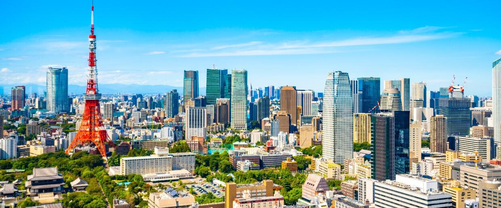

stolica i największe miasto Japonii, położone na południowo-wschodnim wybrzeżu Honsiu i zarazem największy obszar metropolitalny na świecie na poziomie 38 305 000 mieszkańców (stan na kwiecień 2018). Nazwa Tōkyō (jap. 東京) oznacza „Wschodnią Stolicę”. Do 1868 roku miasto nazywało się Edo.
Tokio formalnie nie jest miastem, ale prefekturą metropolitalną od 1 lipca 1943. Zostało zniszczone przez trzęsienie ziemi w 1923, a także przez amerykańskie bombardowania w maju 1945 (podczas II wojny światowej). Było również organizatorem letnich igrzysk olimpijskich w 1964 i ponownie w 2021.
Historia
Pierwsza wzmianka o osadzie rybackiej na przedpolu późniejszego zamku Edo pojawiła się w XII wieku. Ieyasu Tokugawa – założyciel dynastii siogunów, panującej od XVII do XIX wieku, uzyskawszy od Hideyoshi Toyotomi ziemie Kantō jako dzierżawę lenną (lata 90. XVI w.), uczynił z Edo centrum swoich dóbr, a potem faktyczną stolicę kraju. Edo było siedzibą dynastii Tokugawa do restauracji Meiji w XIX wieku.
Umiejscowienie na świecie